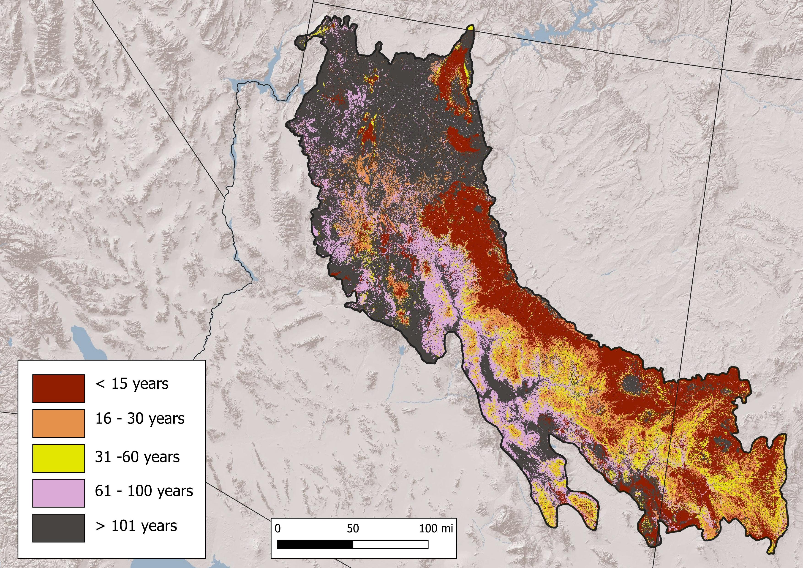

Past
LANDFIRE’s Biophysical Settings (BpSs, aka “Historical Ecosystems”) represent “the vegetation system that may have been dominant on the landscape prior to Euro-American settlement and is based on both the current biophysical environment and an approximation of the historical disturbance regime.” (from https://landfire.gov/bps.php). We will use this data to explore the most prevalent BpSs in a chart and map, and also the historical disturbance data that are linked to the BpSs.
Summary
Chart of most prevalent Biophysical Settings
Map of most prevalent Biophysical Settings

Chart of historic annual acres burned per ecosystem

Simplified map of historical fire regimes

All historical disturbances per ecosystem
Data table
| ZONE | BPS_MODEL | BPS_NAME | GROUPVEG | FRI_REPLAC | FRI_MIXED | FRI_SURFAC | FRG_NEW | ACRES | REL_PERCENT |
|---|---|---|---|---|---|---|---|---|---|
| 15 | 11040_15 | Mogollon Chaparral | Shrubland | 80 | NA | 2,171 | IV-A | 4,124,347 | 15.4 |
| 15 | 10540_15_25 | Southern Rocky Mountain Ponderosa Pine Woodland | Conifer | 396 | 108 | 10 | I-B | 3,432,859 | 12.8 |
| 15 | 10910_15 | Sonoran Mid-Elevation Desert Scrub | Shrubland | 355 | NA | NA | V-A | 2,013,930 | 7.5 |
| 15 | 10250_14_15_24_25_26 | Madrean Pinyon-Juniper Woodland | Conifer | 136 | 209 | 104 | III-A | 1,939,647 | 7.3 |
| 15 | 10804_6_12_15_16_17_18_23_24_25 | Inter-Mountain Basins Big Sagebrush Shrubland-Upland | Shrubland | 120 | NA | NA | IV-B | 1,797,198 | 6.7 |
| 15 | 11270_15 | Inter-Mountain Basins Semi-Desert Shrub-Steppe | Shrubland | 118 | NA | NA | IV-B | 1,771,812 | 6.6 |
| 15 | 10230_14_15_24_25 | Madrean Encinal | Conifer | 125 | 191 | 33 | I-C | 1,641,644 | 6.1 |
| 15 | 11210_15 | Apacherian-Chihuahuan Semi-Desert Grassland and Steppe | Grassland | 10 | NA | 40 | II-B | 1,226,978 | 4.6 |
| 15 | 10240_14_15_24 | Madrean Lower Montane Pine-Oak Forest and Woodland | Conifer | 125 | 191 | 33 | I-C | 977,293 | 3.7 |
| 15 | 10160_15_28 | Colorado Plateau Pinyon-Juniper Woodland | Conifer | 430 | 194 | 2,245 | III-B | 775,206 | 2.9 |
| 15 | 11170_13_15_28 | Southern Rocky Mountain Ponderosa Pine Savanna | Conifer | 368 | NA | 11 | I-B | 788,875 | 2.9 |
| 15 | 10820_12_15_16_17_23_24 | Mojave Mid-Elevation Mixed Desert Scrub | Shrubland | 815 | NA | NA | V-B | 746,149 | 2.8 |
| 15 | 11590_15 | Rocky Mountain Montane Riparian Systems | Riparian | 54 | NA | 8 | I-B | 612,146 | 2.3 |
| 15 | 11090_15_25 | Sonoran Paloverde-Mixed Cacti Desert Scrub | Shrubland | 1,049 | NA | NA | V-B | 454,729 | 1.7 |
| 15 | 11350_15_28 | Inter-Mountain Basins Semi-Desert Grassland | Grassland | 77 | 37 | NA | I-C | 394,050 | 1.5 |
| NA | NA | Barren-Rock/Sand/Clay | Barren-Rock/Sand/Clay | NA | NA | NA | NA | 283,524 | 1.1 |
| 15 | 10510_15_16_17_22_23_24_25 | Southern Rocky Mountain Dry-Mesic Montane Mixed Conifer Forest and Woodland | Conifer | 90 | 77 | 14 | I-B | 281,455 | 1.1 |
| 15 | 10770_15 | Chihuahuan Succulent Desert Scrub | Shrubland | 347 | NA | NA | V-A | 281,812 | 1.1 |
| 15 | 10780_15 | Colorado Plateau Blackbrush-Mormon-tea Shrubland | Shrubland | 282 | NA | NA | V-A | 280,649 | 1.0 |
| 15 | 10810_15_16_23_24_28 | Inter-Mountain Basins Mixed Salt Desert Scrub | Shrubland | 616 | NA | NA | V-B | 272,223 | 1.0 |
| 15 | 10520_15 | Southern Rocky Mountain Mesic Montane Mixed Conifer Forest and Woodland | Conifer | 186 | 90 | 72 | I-C | 228,222 | 0.9 |
| 15 | 10550_15_28 | Rocky Mountain Subalpine Dry-Mesic Spruce-Fir Forest and Woodland | Conifer | 199 | 435 | NA | IV-B | 217,663 | 0.8 |
| 15 | 11160_15_25 | Madrean Juniper Savanna | Conifer | 136 | 208 | 106 | III-A | 201,487 | 0.8 |
| 15 | 10610_15_25 | Inter-Mountain Basins Aspen-Mixed Conifer Forest and Woodland | Hardwood-Conifer | 43 | 20 | 110 | I-B | 192,844 | 0.7 |
| 15 | 10190_15 | Great Basin Pinyon-Juniper Woodland | Conifer | 475 | 335 | 765 | III-B | 172,529 | 0.6 |
| 15 | 10870_4_6_12_13_14_15_17_24_25 | Sonora-Mojave Creosotebush-White Bursage Desert Scrub | Shrubland | 329 | NA | NA | V-A | 148,994 | 0.6 |
| 15 | 11070_15 | Rocky Mountain Gambel Oak-Mixed Montane Shrubland | Shrubland | 50 | 174 | NA | III-A | 162,637 | 0.6 |
| 15 | 11150_15_16_23_24 | Inter-Mountain Basins Juniper Savanna | Conifer | 333 | 218 | 126 | III-A | 156,553 | 0.6 |
| 15 | 11552_13_14_15 | North American Warm Desert Riparian Systems-Stringers | Riparian | 735 | NA | NA | V-B | 157,749 | 0.6 |
| 15 | 10040 | North American Warm Desert Sparsely Vegetated Systems | Sparse | NA | NA | NA | NA | 142,018 | 0.5 |
| 15 | 11460_15_16_23_24_25_28 | Southern Rocky Mountain Montane-Subalpine Grassland | Grassland | 20 | NA | 21 | I-B | 138,484 | 0.5 |
| 15 | 11250_6_12_13_15_16_17_18_23_24_25_28 | Inter-Mountain Basins Big Sagebrush Steppe | Shrubland | 117 | NA | NA | IV-B | 108,494 | 0.4 |
| 15 | 10950_15 | Apacherian-Chihuahuan Mesquite Upland Scrub | Shrubland | 10 | NA | 138 | II-B | 77,810 | 0.3 |
| 15 | 10640_15_16_17_23_24_27_28 | Colorado Plateau Mixed Low Sagebrush Shrubland | Shrubland | 239 | 119 | NA | III-A | 85,132 | 0.3 |
| 15 | 11080_4_5_13_14_15_24_25 | Sonora-Mojave Semi-Desert Chaparral | Shrubland | 81 | NA | NA | IV-A | 77,234 | 0.3 |
| 15 | 10930_13_15_16_23_24_28 | Southern Colorado Plateau Sand Shrubland | Shrubland | 220 | NA | NA | V-A | 83,484 | 0.3 |
| 15 | 11550_15 | North American Warm Desert Riparian Systems | Riparian | 777 | 83 | NA | III-A | 82,070 | 0.3 |
| NA | NA | Open Water | Open Water | NA | NA | NA | NA | 52,704 | 0.2 |
| 15 | 11000_15 | Chihuahuan Mixed Desert and Thorn Scrub | Shrubland | 567 | 802 | NA | V-A | 57,956 | 0.2 |
| 15 | 11600_15_28 | Rocky Mountain Subalpine/Upper Montane Riparian Systems | Riparian | 273 | NA | 80 | III-A | 40,634 | 0.2 |
| 15 | 10260_15 | Madrean Upper Montane Conifer-Oak Forest and Woodland | Conifer | 305 | 62 | 13 | I-B | 19,806 | 0.1 |
| 15 | 10803_6_12_15_16_17_18_23_24_25 | Inter-Mountain Basins Big Sagebrush Shrubland-Semi-Desert | Shrubland | 151 | NA | NA | IV-B | 20,048 | 0.1 |
| 15 | 10060 | Rocky Mountain Alpine/Montane Sparsely Vegetated Systems | Sparse | NA | NA | NA | NA | 3,510 | 0.0 |
| 13 | 10040 | North American Warm Desert Sparsely Vegetated Systems | Sparse | NA | NA | NA | NA | 58 | 0.0 |
| 25 | 10860_25 | Rocky Mountain Lower Montane-Foothill Shrubland | Shrubland | 72 | 203 | NA | III-A | 4 | 0.0 |
| 25 | 10950_25 | Apacherian-Chihuahuan Mesquite Upland Scrub | Shrubland | 10 | NA | 49 | II-B | 49 | 0.0 |
| 25 | 10760_25 | Chihuahuan Stabilized Coppice Dune and Sand Flat Scrub | Shrubland | 22 | NA | NA | II-C | 3 | 0.0 |
| 24 | 10820_12_15_16_17_23_24 | Mojave Mid-Elevation Mixed Desert Scrub | Shrubland | 815 | NA | NA | V-B | 142 | 0.0 |
| 24 | 11261_16_23_24 | Inter-Mountain Basins Montane Sagebrush Steppe-Mountain Big Sagebrush | Shrubland | 49 | NA | NA | IV-A | 70 | 0.0 |
| 14 | 10950_14 | Apacherian-Chihuahuan Mesquite Upland Scrub | Shrubland | 10 | NA | 40 | II-B | 27 | 0.0 |
| 13 | 10010 | Inter-Mountain Basins Sparsely Vegetated Systems | Sparse | NA | NA | NA | NA | 4 | 0.0 |
| 13 | 10160_13_14 | Colorado Plateau Pinyon-Juniper Woodland | Conifer | 483 | 340 | 768 | III-B | 15 | 0.0 |
| 13 | 10190_13_14 | Great Basin Pinyon-Juniper Woodland | Conifer | 474 | 337 | 780 | III-B | 79 | 0.0 |
| 13 | 10540_13_14 | Southern Rocky Mountain Ponderosa Pine Woodland | Conifer | 254 | 39 | 28 | I-B | 0 | 0.0 |
| 13 | 10820_4_13 | Mojave Mid-Elevation Mixed Desert Scrub | Shrubland | 399 | NA | NA | V-A | 671 | 0.0 |
| 13 | 10870_4_6_12_13_14_15_17_24_25 | Sonora-Mojave Creosotebush-White Bursage Desert Scrub | Shrubland | 329 | NA | NA | V-A | 373 | 0.0 |
| 13 | 10930_13_15_16_23_24_28 | Southern Colorado Plateau Sand Shrubland | Shrubland | 220 | NA | NA | V-A | 3 | 0.0 |
| 13 | 11030_6_7_12_13_16_17_23 | Great Basin Semi-Desert Chaparral | Shrubland | 50 | NA | NA | IV-A | 12 | 0.0 |
| 13 | 11150_13 | Inter-Mountain Basins Juniper Savanna | Conifer | 807 | 427 | 567 | III-B | 0 | 0.0 |
| 13 | 11540_13 | Inter-Mountain Basins Montane Riparian Systems | Riparian | 68 | NA | NA | IV-A | 6 | 0.0 |
| 13 | 11552_13_14_15 | North American Warm Desert Riparian Systems-Stringers | Riparian | 735 | NA | NA | V-B | 45 | 0.0 |
| 14 | 10040 | North American Warm Desert Sparsely Vegetated Systems | Sparse | NA | NA | NA | NA | 3 | 0.0 |
| 14 | 10230_14_15_24_25 | Madrean Encinal | Conifer | 125 | 191 | 33 | I-C | 5 | 0.0 |
| 14 | 10250_14_15_24_25_26 | Madrean Pinyon-Juniper Woodland | Conifer | 136 | 209 | 104 | III-A | 1 | 0.0 |
| 14 | 10820_14 | Mojave Mid-Elevation Mixed Desert Scrub | Shrubland | 406 | NA | NA | V-A | 441 | 0.0 |
| 14 | 10870_4_6_12_13_14_15_17_24_25 | Sonora-Mojave Creosotebush-White Bursage Desert Scrub | Shrubland | 329 | NA | NA | V-A | 499 | 0.0 |
| 14 | 10900_14 | Sonoran Granite Outcrop Desert Scrub | Shrubland | 513 | NA | NA | V-B | 1,289 | 0.0 |
| 14 | 10910_13_14 | Sonoran Mid-Elevation Desert Scrub | Shrubland | 104 | NA | NA | IV-B | 24 | 0.0 |
| 14 | 11040_13_14_25 | Mogollon Chaparral | Shrubland | 77 | NA | NA | IV-A | 358 | 0.0 |
| 14 | 11080_4_5_13_14_15_24_25 | Sonora-Mojave Semi-Desert Chaparral | Shrubland | 81 | NA | NA | IV-A | 31 | 0.0 |
| 14 | 11090_14 | Sonoran Paloverde-Mixed Cacti Desert Scrub | Shrubland | 1,056 | NA | NA | V-B | 166 | 0.0 |
| 14 | 11210_14 | Apacherian-Chihuahuan Semi-Desert Grassland and Steppe | Grassland | 10 | NA | 40 | II-B | 31 | 0.0 |
| 14 | 11550_13_14 | North American Warm Desert Riparian Systems | Riparian | 785 | 23 | NA | I-C | 11 | 0.0 |
| 14 | 11552_13_14_15 | North American Warm Desert Riparian Systems-Stringers | Riparian | 735 | NA | NA | V-B | 128 | 0.0 |
| 23 | 10010 | Inter-Mountain Basins Sparsely Vegetated Systems | Sparse | NA | NA | NA | NA | 64 | 0.0 |
| 23 | 10040 | North American Warm Desert Sparsely Vegetated Systems | Sparse | NA | NA | NA | NA | 7 | 0.0 |
| 23 | 10160_16_23_24_25 | Colorado Plateau Pinyon-Juniper Woodland | Conifer | 435 | 195 | 2,265 | III-B | 140 | 0.0 |
| 23 | 10640_15_16_17_23_24_27_28 | Colorado Plateau Mixed Low Sagebrush Shrubland | Shrubland | 239 | 119 | NA | III-A | 6 | 0.0 |
| 23 | 10780_16_23_24_25 | Colorado Plateau Blackbrush-Mormon-tea Shrubland | Shrubland | 146 | 162 | NA | III-A | 59 | 0.0 |
| 23 | 10810_15_16_23_24_28 | Inter-Mountain Basins Mixed Salt Desert Scrub | Shrubland | 616 | NA | NA | V-B | 249 | 0.0 |
| 23 | 11040_23_24 | Mogollon Chaparral | Shrubland | 47 | 370 | NA | IV-A | 4 | 0.0 |
| 23 | 11070_23_24 | Rocky Mountain Gambel Oak-Mixed Montane Shrubland | Shrubland | 51 | 150 | NA | III-A | 43 | 0.0 |
| 23 | 11261_16_23_24 | Inter-Mountain Basins Montane Sagebrush Steppe-Mountain Big Sagebrush | Shrubland | 49 | NA | NA | IV-A | 24 | 0.0 |
| 23 | 11270_16_23_24_25 | Inter-Mountain Basins Semi-Desert Shrub-Steppe | Shrubland | 105 | NA | NA | IV-B | 119 | 0.0 |
| 23 | 11350_16_23_24 | Inter-Mountain Basins Semi-Desert Grassland | Grassland | 25 | NA | NA | II-C | 1 | 0.0 |
| 23 | 11590_16_23_24_26 | Rocky Mountain Montane Riparian Systems | Riparian | 270 | NA | 79 | III-A | 64 | 0.0 |
| 24 | 10010 | Inter-Mountain Basins Sparsely Vegetated Systems | Sparse | NA | NA | NA | NA | 13 | 0.0 |
| 24 | 10040 | North American Warm Desert Sparsely Vegetated Systems | Sparse | NA | NA | NA | NA | 3 | 0.0 |
| 24 | 10160_16_23_24_25 | Colorado Plateau Pinyon-Juniper Woodland | Conifer | 435 | 195 | 2,265 | III-B | 406 | 0.0 |
| 24 | 10230_14_15_24_25 | Madrean Encinal | Conifer | 125 | 191 | 33 | I-C | 28 | 0.0 |
| 24 | 10240_14_15_24 | Madrean Lower Montane Pine-Oak Forest and Woodland | Conifer | 125 | 191 | 33 | I-C | 16 | 0.0 |
| 24 | 10250_14_15_24_25_26 | Madrean Pinyon-Juniper Woodland | Conifer | 136 | 209 | 104 | III-A | 28 | 0.0 |
| 24 | 10510_15_16_17_22_23_24_25 | Southern Rocky Mountain Dry-Mesic Montane Mixed Conifer Forest and Woodland | Conifer | 90 | 77 | 14 | I-B | 9 | 0.0 |
| 24 | 10520_16_23_24 | Southern Rocky Mountain Mesic Montane Mixed Conifer Forest and Woodland | Conifer | 180 | 89 | 74 | I-C | 11 | 0.0 |
| 24 | 10540_16_23_24 | Southern Rocky Mountain Ponderosa Pine Woodland | Conifer | 280 | 226 | 20 | I-C | 932 | 0.0 |
| 24 | 10611_16_23_24 | Inter-Mountain Basins Aspen-Mixed Conifer Forest and Woodland-Low Elevation | Hardwood-Conifer | 43 | 13 | NA | I-B | 1 | 0.0 |
| 24 | 10640_15_16_17_23_24_27_28 | Colorado Plateau Mixed Low Sagebrush Shrubland | Shrubland | 239 | 119 | NA | III-A | 35 | 0.0 |
| 24 | 10660_16_23_24 | Inter-Mountain Basins Mat Saltbush Shrubland | Shrubland | NA | NA | NA | NA | 5 | 0.0 |
| 24 | 10780_16_23_24_25 | Colorado Plateau Blackbrush-Mormon-tea Shrubland | Shrubland | 146 | 162 | NA | III-A | 21 | 0.0 |
| 24 | 10810_15_16_23_24_28 | Inter-Mountain Basins Mixed Salt Desert Scrub | Shrubland | 616 | NA | NA | V-B | 395 | 0.0 |
| 24 | 10930_13_15_16_23_24_28 | Southern Colorado Plateau Sand Shrubland | Shrubland | 220 | NA | NA | V-A | 6 | 0.0 |
| 24 | 11020_13_15_16_23_24 | Colorado Plateau Pinyon-Juniper Shrubland | Conifer | 333 | 222 | 127 | III-A | 6 | 0.0 |
| 24 | 11040_23_24 | Mogollon Chaparral | Shrubland | 47 | 370 | NA | IV-A | 189 | 0.0 |
| 24 | 11070_23_24 | Rocky Mountain Gambel Oak-Mixed Montane Shrubland | Shrubland | 51 | 150 | NA | III-A | 13 | 0.0 |
| 24 | 11150_15_16_23_24 | Inter-Mountain Basins Juniper Savanna | Conifer | 333 | 218 | 126 | III-A | 75 | 0.0 |
| 24 | 11160_24 | Madrean Juniper Savanna | Conifer | 139 | 214 | 101 | III-A | 17 | 0.0 |
| 24 | 11170_16_23_24 | Southern Rocky Mountain Ponderosa Pine Savanna | Conifer | 158 | 80 | 9 | I-B | 781 | 0.0 |
| 24 | 11210_24 | Apacherian-Chihuahuan Semi-Desert Grassland and Steppe | Grassland | 10 | NA | 42 | II-B | 125 | 0.0 |
| 24 | 11270_16_23_24_25 | Inter-Mountain Basins Semi-Desert Shrub-Steppe | Shrubland | 105 | NA | NA | IV-B | 508 | 0.0 |
| 24 | 11350_16_23_24 | Inter-Mountain Basins Semi-Desert Grassland | Grassland | 25 | NA | NA | II-C | 262 | 0.0 |
| 24 | 11530_16_23_24_25_27 | Inter-Mountain Basins Greasewood Flat | Shrubland | 208 | NA | NA | V-A | 11 | 0.0 |
| 24 | 11590_16_23_24_26 | Rocky Mountain Montane Riparian Systems | Riparian | 270 | NA | 79 | III-A | 192 | 0.0 |
| 15 | 10110_15 | Rocky Mountain Aspen Forest and Woodland | Hardwood | 146 | 1,774 | 841 | IV-B | 1,181 | 0.0 |
| 15 | 10560_15_28 | Rocky Mountain Subalpine Mesic-Wet Spruce-Fir Forest and Woodland | Conifer | 199 | 435 | NA | IV-B | 4,459 | 0.0 |
| 15 | 11020_13_15_16_23_24 | Colorado Plateau Pinyon-Juniper Shrubland | Conifer | 333 | 222 | 127 | III-A | 4,090 | 0.0 |
| 25 | 10040 | North American Warm Desert Sparsely Vegetated Systems | Sparse | NA | NA | NA | NA | 8 | 0.0 |
| 25 | 10230_14_15_24_25 | Madrean Encinal | Conifer | 125 | 191 | 33 | I-C | 256 | 0.0 |
| 25 | 10240_25_27 | Madrean Lower Montane Pine-Oak Forest and Woodland | Conifer | 60 | 30 | 11 | I-B | 23 | 0.0 |
| 25 | 10250_14_15_24_25_26 | Madrean Pinyon-Juniper Woodland | Conifer | 136 | 209 | 104 | III-A | 195 | 0.0 |
| 25 | 10510_15_16_17_22_23_24_25 | Southern Rocky Mountain Dry-Mesic Montane Mixed Conifer Forest and Woodland | Conifer | 90 | 77 | 14 | I-B | 0 | 0.0 |
| 25 | 10540_15_25 | Southern Rocky Mountain Ponderosa Pine Woodland | Conifer | 396 | 108 | 10 | I-B | 16 | 0.0 |
| 25 | 10770_25_26 | Chihuahuan Succulent Desert Scrub | Shrubland | 160 | NA | NA | IV-B | 1,004 | 0.0 |
| 25 | 10870_4_6_12_13_14_15_17_24_25 | Sonora-Mojave Creosotebush-White Bursage Desert Scrub | Shrubland | 329 | NA | NA | V-A | 72 | 0.0 |
| 25 | 10910_25 | Sonoran Mid-Elevation Desert Scrub | Shrubland | 374 | NA | NA | V-A | 450 | 0.0 |
| 25 | 11002_25 | Chihuahuan Mixed Desert and Thorn Scrub-Shrubland | Shrubland | 841 | NA | NA | V-B | 127 | 0.0 |
| 25 | 11003_25 | Chihuahuan Mixed Desert and Thorn Scrub-Steppe | Shrubland | NA | NA | NA | NA | 339 | 0.0 |
| 25 | 11010_25 | Madrean Oriental Chaparral | Shrubland | 41 | NA | 28 | I-C | 0 | 0.0 |
| 25 | 11040_13_14_25 | Mogollon Chaparral | Shrubland | 77 | NA | NA | IV-A | 62 | 0.0 |
| 25 | 11070_25_28 | Rocky Mountain Gambel Oak-Mixed Montane Shrubland | Shrubland | 50 | 171 | NA | III-A | 2 | 0.0 |
| 25 | 11090_15_25 | Sonoran Paloverde-Mixed Cacti Desert Scrub | Shrubland | 1,049 | NA | NA | V-B | 6 | 0.0 |
| 25 | 11160_15_25 | Madrean Juniper Savanna | Conifer | 136 | 208 | 106 | III-A | 16 | 0.0 |
| 25 | 11190_24_25 | Southern Rocky Mountain Juniper Woodland and Savanna | Conifer | 503 | 217 | 32 | I-C | 1 | 0.0 |
| 25 | 11210_25 | Apacherian-Chihuahuan Semi-Desert Grassland and Steppe | Grassland | NA | 82 | NA | III-A | 465 | 0.0 |
| 25 | 11220_25 | Chihuahuan Gypsophilous Grassland and Steppe | Grassland | 65 | NA | NA | IV-A | 28 | 0.0 |
| 25 | 11330_25 | Chihuahuan Sandy Plains Semi-Desert Grassland | Grassland | 896 | NA | NA | V-B | 70 | 0.0 |
| 25 | 11350_25 | Inter-Mountain Basins Semi-Desert Grassland | Grassland | 26 | 1,011 | NA | II-C | 77 | 0.0 |
| 25 | 11550_25 | North American Warm Desert Riparian Systems | Riparian | 225 | NA | NA | V-A | 206 | 0.0 |
| 25 | 11590_25 | Rocky Mountain Montane Riparian Systems | Riparian | 272 | NA | 79 | III-A | 42 | 0.0 |
| 25 | 15030_25_27 | Chihuahuan Loamy Plains Desert Grassland | Grassland | 15 | NA | NA | II-B | 8 | 0.0 |
| 25 | 15040_25_27 | Chihuahuan-Sonoran Desert Bottomland and Swale Grassland | Grassland | 10 | NA | NA | II-B | 30 | 0.0 |
| 23 | 10804_6_12_15_16_17_18_23_24_25 | Inter-Mountain Basins Big Sagebrush Shrubland-Upland | Shrubland | 120 | NA | NA | IV-B | 257 | 0.0 |
| 24 | 10803_6_12_15_16_17_18_23_24_25 | Inter-Mountain Basins Big Sagebrush Shrubland-Semi-Desert | Shrubland | 151 | NA | NA | IV-B | 32 | 0.0 |
| 24 | 10804_6_12_15_16_17_18_23_24_25 | Inter-Mountain Basins Big Sagebrush Shrubland-Upland | Shrubland | 120 | NA | NA | IV-B | 208 | 0.0 |
| 25 | 10804_6_12_15_16_17_18_23_24_25 | Inter-Mountain Basins Big Sagebrush Shrubland-Upland | Shrubland | 120 | NA | NA | IV-B | 135 | 0.0 |